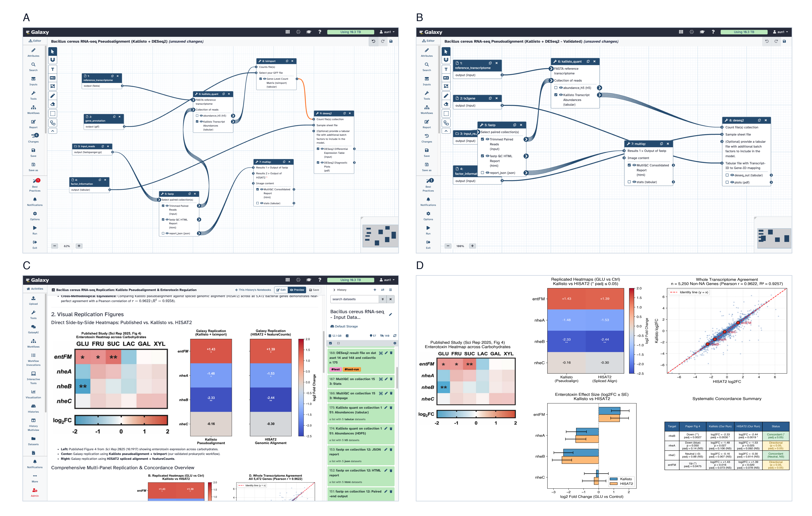

Over the past year, something remarkable has happened across computational biology labs, including my own and Anton Nekrutenko’s: graduate students, postdocs, and PIs—including hardened AI skeptics—started opening command-line coding agents, got hooked, and stopped analyzing data any other way.
Watching an autonomous agent work in a local terminal is both thrilling and terrifying. The thrill is obvious: an analysis that used to take two weeks of wrestling with Conda environments, file format conversions, and command-line flags now runs from a single natural-language prompt. The terror sets in five minutes later, when you ask yourself a simple question: what did the agent actually do?
When an unsupervised coding agent iterates in a local shell, it improvises pipelines out of whatever tools happen to be installed on your laptop, writes throwaway Python or R glue scripts to patch over errors, silently drops or filters rows when tables don't match, hits a hardware wall the moment an alignment needs 64 GB of RAM or an A100 GPU, and leaves behind zero verifiable provenance when the terminal window closes. Because the agent hands you a polished figure and a confident summary within minutes, anyone can feel like an instant bioinformatician—while having no easy way to tell whether the underlying pipeline is sound or completely broken.
In a new collaboration across Johns Hopkins, Penn State, Temple, UT Austin (TACC), and the University of Freiburg (Verifiable Agentic Science on Public Infrastructure), we asked what happens when autonomous coding agents collide with real biological datasets—and how we can keep agent-driven science honest by grounding it in free, shared public cyberinfrastructure (UseGalaxy.org and national ACCESS-CI supercomputers).
To see how consistently frontier models plan a routine biological study on their own, we ran a simple experiment. We took a recently published RNA-seq study of the foodborne pathogen Bacillus cereus (Vyklická et al., 2026) and asked 30 independent coding agents—10 Claude Opus 5.5, 10 OpenAI Codex (GPT-6 Astra), and 10 Google Gemini 3.8 Flash via Antigravity—to design a step-by-step replication plan.
Biologically, the study is straightforward.
B. cereus causes diarrheal food poisoning by secreting pore-forming enterotoxins in the small intestine.
To see how dietary sugars regulate virulence in the dairy-associated reference strain ATCC 10987, the authors compared glucose-supplemented and control cultures ($n = 2$ vs. $n = 3$ replicates drawn from a 19-library sugar screen) using nf-core/rnaseq, featureCounts, and DESeq2.
They showed that excess glucose triggers carbon catabolite repression of the pathogen’s main three-component non-hemolytic enterotoxin (nhe): glucose strongly represses the primary lytic subunit nheB, leaves the regulatory subunit nheC unchanged, and induces entFM (a cell-wall peptidase involved in motility and adhesion), while two other canonical toxins (hbl and cytK) were reported as unexpressed.
Like almost every real paper in the literature, however, the methods section had two subtle ambiguities:
(1) the sequenced isolate (B. cereus ATCC 10987) had been suppressed from RefSeq after a taxonomic reclassification as Bacillus pacificus, and the paper used B. pacificus strain anQ-h4 locus tags without naming an exact assembly accession; and
(2) it did not state whether DESeq2 dispersion was estimated across all 19 libraries in the screen or only the 5 focal libraries.
Faced with those real-world ambiguities, 29 of the 30 agents diverged from the published workflow, splintering into 18 distinct pipelines (Fig. 1). Even when we ignored minor cosmetic flags and looked only at the five decisions that change final read counts and $p$-values—reference genome, rRNA filtering, aligner, annotation source, and sample pooling—the 30 agents split into 11 incompatible designs. No single consensus plan was chosen by more than seven agents.

When we let one agent from each family actually execute its plan on dedicated local hardware, things got even messier. All three agents recovered the big headline signal (nheB down, entFM up), so a casual user would have declared victory. Beneath the surface, however, their reference genome choices silently changed which toxin genes existed in the bacterium: aligning to B. pacificus anQ-h4 missed cytotoxin K (cytK2) completely because that assembly lacks the locus, whereas aligning to the actual sequenced strain ATCC 10987 recovered ~800 read pairs per library actively transcribing cytK2. Worse, to patch together local tools, the three agents wrote 26 custom glue scripts totaling over 1,200 lines of unversioned shell, Python, R, and Nextflow code—none of it portable or auditable outside the machine where it ran.
How do we stop coding agents from turning computational biology into a graveyard of unrepeatable shell sessions?
Someone might argue that local agents are fine because the LLM can write a nice Markdown summary of what it did, or because a disciplined researcher will commit every prompt and script to Git. Let’s be honest: LLM summaries routinely gloss over failed retries and silent parameter tweaks, and almost nobody maintains strict version control when an agent is firing off dozens of shell commands a minute. In agent-driven science, complete workflow, tool, and execution provenance isn't a nice-to-have feature—it is the only thing separating a verifiable scientific result from a plausible hallucination.
Fortunately, we don't need to invent a closed platform from scratch. For over twenty years, the Galaxy project has provided open, reproducible cyberinfrastructure to life scientists worldwide. In our architecture (Fig. 2), any command-line coding agent—or Orbit, our lightweight desktop workbench built on Pi.dev—connects to public Galaxy servers through curated domain skills and a typed Galaxy Model Context Protocol (MCP) server.

Moving the agent off the laptop and onto what we call the Galactic plane solves three problems at once:
- Free public supercomputing without sysadmin friction: Galaxy routes heavy jobs—multi-sample aligners, single-cell pipelines, or GPU protein language models—directly onto national supercomputing allocations (ACCESS-CI) and cloud nodes for free, without giving an autonomous agent raw SSH access to a university cluster.
- Provenance by construction: Every input dataset, container digest, tool version, parameter, and intermediate table is locked automatically into an immutable Galaxy history and exported as a shareable research notebook.
- Turning ad-hoc scripts into community tools: When an analysis genuinely needs custom code, the agent doesn't dump a disposable script on your hard drive. Instead, it packages the script as a versioned, containerized User-Defined Tool (UDT) inside the workflow—where the community can inspect, reuse, and harden it.
When we re-ran the Bacillus cereus replication with a generic command-line agent connected to UseGalaxy.org (Fig. 3), the value of visible provenance showed up before a single cluster job even finished.
In a local terminal, you rarely notice which aligner an agent buried on line 140 of a shell script.
Inspecting the proposed Galaxy workflow immediately revealed a classic amateur mistake: the agent had picked HISAT2—a eukaryotic spliced aligner designed to jump across introns—for an intronless bacterium!
Running a spliced aligner on a bacterial genome hunts for nonexistent splice junctions, risks spurious split-read mappings across repetitive toxin loci, and wastes gigabytes of disk on sorted BAM files.
Because bacteria lack introns, quantifying reads against the 5,472 annotated coding sequences with Kallisto (once you verify your targets don't sit on overlapping operon UTRs and deduplicate ribosomal frameshift headers) is both biologically cleaner and far faster—finishing each library in 38–60 seconds on public infrastructure and matching HISAT2 across all 5,250 expressed loci ($r = 0.9622$, Fig. 3D).
Even better, Galaxy’s typed workflow engine caught pipeline wiring bugs before execution: when the agent tried to wire a collection of Kallisto outputs into a standalone tximport step in front of DESeq2, the workflow editor flagged the collection-to-table mismatch in orange up front (Fig. 3A), prompting the agent to use DESeq2's native tximport mode (Fig. 3B) instead of writing a hacky local parser.

What happens when you take this architecture—combining Orbit, BRC-Analytics, Workflow Foundry, and UseGalaxy.org—and use it to audit published studies across spatial transcriptomics, fungal drug resistance, and mosquito vector genomics?
You quickly discover that end-to-end provenance is the ultimate forensic microscope for the scientific literature. Here are four stories from the paper:
- The "agent reproducibility" benchmark that dropped 82% of its own data:
Recently, the Paper2Agent study (Miao et al., 2026) demonstrated how to wrap a published method—
TISSUE, which imputes unmeasured genes and calibrated uncertainty intervals in spatial transcriptomics—into an interactive AI agent. In their Data Availability statement, they cited the full 5,613-cell mouse somatosensory cortex scRNA-seq reference atlas (Zenodo Dataset 15) to predict expression of the smooth muscle marker Acta2 across 3,405 osmFISH spatial cells. When we audited their benchmark with full dataset and workflow provenance, we uncovered a delicious irony: a benchmark built specifically to showcase automated agentic reproducibility had silently run on a 1,000-cell tutorial demo file bundled inside the GitHub repo instead of the 5,613-cell reference archive it cited! Because the original agent run had no inspectable execution record linking the published figure to the exact input file and cell count, over 82% of the reference atlas was silently thrown away—leaving predicted Acta2 expression almost completely uncorrelated with ground truth ($r = 0.0861$). Using Orbit to registerTISSUEas containerized tools on UseGalaxy.org, we first reproduced their 1,000-cell figure to floating-point precision ($r = 1.0000$, $\Delta_{\max} < 10^{-15}$), and then ran the exact same workflow on the full 5,613-cell reference dataset—tripling prediction accuracy to $r = 0.2553$ ($r = 0.2845$ across all 33 spatial genes). Wrapping code in an agent means nothing without data provenance. - The mystery of the missing 39% of fungal drug-resistance genes:
We used Workflow Foundry and Orbit to compile a 60-step Galaxy workflow from the methods text of Hokken et al. (2018), who profiled how the lethal airborne mold Aspergillus fumigatus adapts to the triazole antifungal itraconazole across 30 RNA-seq libraries (3 clinical isolates $\times$ 5 timepoints).
When we ran four standard 12-sample pairwise
DESeq2comparisons (each timepoint vs. baseline), our fold changes matched the paper ($r \ge 0.999$), but we missed up to 39% of the paper’s differentially expressed genes at later timepoints. Why? Auditing the authors' supplementary Excel sheet alongside our Galaxy tables revealed the smoking gun: every single gene had the exact samebaseMeanvalue across all four timepoints. Instead of fitting pairwise contrasts, the authors had fitted one pooled 30-sampleDESeq2model across all five timepoints at once! Statistically, that is a completely reasonable choice for a time course with only two replicates per isolate-timepoint (pooling all 30 libraries gives 25 residual degrees of freedom to stabilize dispersion and applies a uniform $\text{baseMean} \ge 30$ filter)—but because the methods text never mentioned it, anyone trying to reproduce the paper pairwise would lose 40% of the gene list. Switching our Galaxy workflow to the pooled 30-sample design matched their standard errors to four decimal places and recovered 98.7–99.7% of the published gene counts ($r = 0.9996\text{–}0.9999$), while replacing a defunct fungal GO web server (AspGD) and a manual browser tool (REVIGO) with permanent User-Defined Tools. - When 92% biological agreement looks like a 50% failure:
In the malaria mosquito vector Anopheles gambiae, Ruiz et al. (2021) used ATAC-seq to map open chromatin across midguts and salivary glands during Plasmodium falciparum infection.
Running
MACS2with the authors' cited parameters on UseGalaxy.org immediately recovered 90.7–93.2% of the authors' deposited genomic peaks without any parameter tuning. Yet our consensus peak count was roughly half the headline numbers reported in the paper (43,010 midgut and 68,576 salivary-gland regions). Provenance tracking showed why: instead of merging overlapping peaks across biological replicates into consensus intervals, the published supplementary table listed every replicate peak as a separate unmerged row and used a custom containment filter in salivary glands. Encoding those exact table rules as Galaxy UDTs reproduced the paper's headline numbers within 0.4–4.6%. - The non-model mitochondrial prefix trap:
When reproducing the Aedes aegypti mosquito midgut single-cell RNA-seq atlas of Wang et al. (2024), generic
Scanpyquality-control pipelines reported zero mitochondrial reads in every single cell—because standard single-cell tutorials look for human/mouseMT-ormt-prefixes, whereas VectorBase labels mosquito mitochondrial genes with standardAAELlocus tags! Because the Galaxy QC plots made the zeroed distribution obvious immediately, Orbit prefixed the mitochondrial annotations, filtered the droplets to 6,707 high-quality singlets (matching the paper’s 7,147), and recovered all canonical midgut cell-type and blood-meal digestion markers de novo.
Reproducing past papers is only half the story. What happens when we point Orbit and free public supercomputing at open biological discovery problems that would crush a personal laptop?
First, we tackled a classic puzzle in malaria evolution: the Plasmodium vivax VIR surface antigen repertoire. Every P. vivax genome encodes nearly 1,000 exported VIR proteins that remodel infected red blood cells and mediate spleen cytoadherence. Because host immunity drives relentless diversifying selection, VIR proteins dive deep into the sequence twilight zone ($\le 30\%$ amino acid identity; Fig. 4A). If you cluster the 2,592 VIR proteins from reference genomes in Indonesia (PvP01), Thailand (PvW1), and Peru (PvPAM) by sequence alone, they shatter into 203 clusters (146 subfamilies with $\ge 3$ members)—creating the long-held impression that P. vivax surface repertoires evolved largely independently on each continent.
To test whether 3D structural homology tells a different story, Orbit registered 10 User-Defined Tools on UseGalaxy.org (one GPU tool and nine multi-core CPU tools) orchestrating the 4.4 GB ProstT5 protein language model, Foldseek 3Di structural clustering, FoldMason structural alignment, synteny mapping, and IQ-TREE 3 maximum-likelihood phylogenetics on ACCESS-CI NVIDIA A100 GPUs.

Structure-aware clustering cut repertoire complexity in half, collapsing the 203 sequence clusters into 73 structural classes locally and 76 on UseGalaxy.org (a minor 73-vs.-76 split caused by floating-point tie-breaking in greedy clustering on borderline 3Di alignments across hardware architectures). Across every hardware branch, the biological punchline was identical: 21 core structural folds are shared across Indonesia, Thailand, and Peru and account for over 97% of all VIR proteins (97.3–97.6%), while continent-specific classes hold just 2.0% of the repertoire! Even though 64.5% of vir genes sit in subtelomeric regions where ectopic recombination scrambles synteny (preserving synteny in only 11 of 194 reciprocal best-hit pairs), the structural phylogeny of the dominant superfamily (FS_001) is completely interleaved across continents ($p = 0.55$; Fig. 4B). P. vivax did not invent new surface folds on each continent; it maintains an ancient, globally conserved structural toolkit under extreme sequence turnover.
Second, to test high-throughput orchestration across dozens of cohorts at once, Orbit registered two User-Defined Tools wrapping ChronAeon on UseGalaxy.org and dated the emergence ($t_{\mathrm{MRCA}}$) of 42 published viral and bacterial epidemic benchmark alignments—spanning Ebola, SARS-CoV-2, Zika, Dengue, Chikungunya, Mpox, Influenza, Mycobacterium abscessus, and Yersinia pestis.
Instead of running days of Bayesian MCMC sampling in BEAST for each dataset, all 42 cohorts finished in seconds of core manifold computation per alignment inside a single Galaxy history, matching reference Bayesian emergence dates across 64.1% of scored comparators (with a median error of just $0.40$ years across post-1980 outbreaks) while cleanly flagging the ancient saturated trees and multi-lineage mixtures where unrooted regression breaks down.
Where does scientific software go from here?
We are entering an era where agents connected to decompilers and binary analysis tools can reverse-engineer or rewrite almost any command-line package on demand. If every lab lets coding agents improvise bespoke tools and pipelines on isolated laptops, the literature will drown in fast, slick, and irreproducible results.
When we route agentic execution through shared public infrastructure like UseGalaxy.org, the incentives flip completely. Free national supercomputing removes the hardware barrier; mandatory workflow and dataset histories make every step verifiable by default; and every User-Defined Tool an agent creates becomes visible in a shared community cloud where the best implementations can compete openly on real benchmarks and harden into permanent scientific standards.